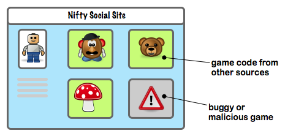
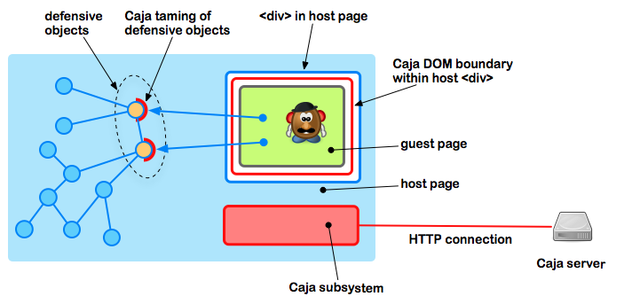

Caja is a system which allows a host page to safely embed external content.
Say you are running a social site where people can meet with their friends. But your users want to run games on the site. The games are code written by people you have never met and have no particular reason to trust. These games need to interact with the users, via their UI. They might also want to interact with your site, to post high scores. You have some idea of what interactions a game is allowed to have with your site, for example, it may only post one "high score" notification per day, but may have no other access to the user's resources on your site.
Clearly, just running untrusted code on your site exposes you and
your users to all the bugs -- and evil -- that a game may harbor. You
could put each game in its own <iframe> on a
separate domain, but that means you need to host a separate, safe
domain for the games to be served from. And you incur the bother of
having to implement cross-domain messaging between the games and your
site, either via client-side hacks or server-side proxying.
Caja provides a better way. Using Caja, you can embed each game in
a <div> directly within your site's page, and
interact with it via normal JavaScript objects. Caja lets you do this
safely, and gives you a place to stand to enforce your policies (such
as the "one notification per day" rule) via regular JavaScript code.
To use Caja, you arrange your host page such that Caja creates a secure boundary around the guest code. Among the objects in your host page, you construct some which act defensively -- in other words, their API assumes that their clients may be buggy or malicious. You give the guest code access to these objects, and subsequently, you and the guest code use these objects to cooperate. Caja provides a taming of your defensive objects to make sure that guest code can only use their published API.
To use Caja effectively, you need to know some basics about how it works. The following shows the major steps in how a page uses Caja. Not all of them have to happen in the exact order shown, as you will no doubt realize as you become more familiar with Caja.
The host code includes the main Caja script, prepares the defensive
objects, and constructs a <div> to receive the
guest code. The Caja script establishes a connection to the Caja
server as specified by its configuration. We supply a Caja server at
http://caja.appspot.com/, or you can download our code
and run your own.
The host code asks Caja to tame the defensive objects, and uses
Caja to construct a DOM boundary within the <div>
it has chosen.
The host code asks Caja to run some guest code -- represented as
HTML with CSS and JavaScript -- within the supplied
<div>, supplying to that code the tamed defensive
objects previously constructed.
In order to run the code safely, Caja must transform it to make it
safe. It does this by sending a request to the Caja server, which
GETs the code and returns the transformed code. We call
the Caja transformation cajoling.
Caja then runs the code in the supplied <div>
with the tamed defensive objects you specified.
From the viewpoint of the guest code, it runs with what seems to be
a W3C DOM compliant document object and an ECMAScript 5
compliant JavaScript virtual machine. Its document is
confined to the boundaries of the supplied <div>,
and its JavaScript globals, like Object and
Array, are its own and do not affect code outside it.
The tamed defensive objects are visible to guest code as additional
global variables in its top-level JavaScript context. For example, if
the host page provided a game with a tamed function for reporting a
top score under the name sendTopScore, the game code
would simply see a sendTopScore global variable and could
invoke it as a function in the usual manner.
The easiest way to learn to use Caja is to just do it! Caja does not require that you download any software or run any servers. All you need is a publicly visible Website to host your guest pages.
First create a host page; include the Caja boostrap script; create
a <div> div for the UI of your guest page; and give
yourself a place to put your own code that interacts with Caja.
<html>
<head>
<title>My first Caja host page</title>
<script src="http://caja.appspot.com/caja.js"></script>
<style type="text/css">
#guestdiv {
width: 75%;
min-height: 50px;
border: 1px solid black;
margin: 10px;
}
</style>
</head>
<body>
<h1>My first Caja host page</h1>
<hr>
<div id="guest0" class="guestdiv"></div>
<script type="text/javascript" src="hostpage.js"></script>
<hr>
</body>
</html>
Initially, where hostpage.js is still an empty
file, your page should look something like the following:
Now arrange to put your first guest page at some publicly available URL. An example of a starter guest page would be the following:
<html>
<head></head>
<body>
<h1>My first Caja guest page</h1>
<hr>
<p>Hello world!</p>
<hr>
</body>
</html>
Assuming you put this guest page at the location
http://example.com/guestpage.html, you would include it
in your host page by writing, in hostpage.js, the
following:
var guestUrl = 'http://example.com/guestpage.html';
var guestDiv = document.getElementById('guest0');
caja.configure({ // ①
cajaServer: 'http://caja.appspot.com' // ②
}, function(frameGroup) { // ③
frameGroup.makeES5Frame(guestDiv, undefined, function(frame) { // ④
frame.run(guestUrl, undefined, function(result) { // ⑤
// Guest code is now running // ⑥
});
});
});
① The script caja.js introduces one name into
the host page's global namespace, the symbol caja. This
object has one method, configure.
② Pass to the configure method a map of
configuration parameters. As a minimum, pass the location of the Caja
server you are using, as shown. Make sure that your source for the
caja.js script, and your cajaServer
parameter, point to the same service. Do not attempt to make
a local copy of caja.js; it is crucially important for
your security that you always get the latest caja.js
according to the server you are using!
③ The configure method returns a frame
group object. A typical Caja host page need only create one frame
group. We will be using various methods of the frame group later on
but, for the moment, we will use only one of its methods.
④ The makeES5Frame method of the frame group
constructs a Caja frame to contain guest code running under
the ECMAScript 5 language and with a DOM document
confined to the <div> provided as
guestDiv.
⑤ The run method of the frame runs the
specified guest page inside the frame.
⑥ The callback specified to the run method is
invoked after the guest page is running. Conceptually, this callback
is invoked after onload in the guest page is called.
TODO(ihab.awad): Continue this tutorial....
Sourcing the script caja.js places a singleton object,
caja, in the global namespace.
configurecaja.configure(params, callback)params — a map of configuration parameters for
the Caja system. These include:
cajaServer: a string giving the URL of the Caja server. This must match the location from which thecaja.jsscript was sourced. For example, if the script was fromhttp://caja.appspot.com/caja.js, thencajaServermust, correspondigly, behttp://caja.appspot.com/.
debug: a boolean indicating whether to configure Caja for debugging. At this time, debugging support means that the Caja infrastructure, and the cajoled code, will be pretty-printed for readability, rather than minified for speed.
callback — a unary function called back when the
method completes with one parameter, a frame
group.
Example
caja.configure({
cajaServer: 'http://caja.appspot.com/',
debug: false
}, function (frameGroup) {
// use frameGroup
});
A configured Caja context the members of which can share the same set of tamed defensive objects. Most host pages will need to create only one frame group.
iframeA direct reference to the <iframe> object used
for taming variables. Provided for diagnostics and testing only.
It is crucial for the security of your host page that you never inject
any code or other content into this frame, since you may easily break invariants
of the Caja system.
TODO(ihab.awad): Should we just skip this?
tame
aFrameGroup.tame(aDefensiveObject)
Tames a graph of defensive objects rooted at the supplied object.
aDefensiveObject — a defensive object to be
tamed. This object may have taming
annotations on some of its components.
Returns a tamed object suitable for presenting to guest code, representing the supplied defensive object.
makeES5Frame
aFrameGroup.makeES5Frame(div, uriCallback, callback)
Creates a new ES5 frame.
div — the HTML <div> within
which Caja will construct a confined DOM document for the
guest page. This may be undefined, in which case the
frame may only be used to run JavaScript code (see below).
uriCallback — a URI
callback object that is called whenever guest code attempts to
gain access to an external URI.
callback — a unary function called back when the
method completes with one parameter, an ES5 frame.
A confined ECMAScript 5 JavaScript context, with an optional
confined DOM document.
iframeA direct reference to the <iframe> object used
to run the code for this ES5 frame. Provided for diagnostics and
testing only. It is crucial for the security of your host page
that you never inject any code or other content into this frame, since
you may easily break invariants of the Caja system.
TODO(ihab.awad): Should we just skip this?
importsA reference to the set of global variables to be provided to guest code in this frame.
TODO(ihab.awad): Should we provide this directly?
If we do, for "advanced" use, we should document how to use it --
especially the fact that people have to call
DefineOwnProperty___() on it to add new imports.
loaderA reference to the module loader of this frame.
TODO(ihab.awad): Should we provide this directly?
If we do, for "advanced" use, we should document how to use it. At the
moment, we don't really provide a "published" way for people to just
run modules against the imports of a frame. The run
method (see below) is "one-shot" only. Should think about flexibility
vs. API complexity here.
run
anES5Frame.run(url, extraImports, callback)
url — the URL of a guest page or guest
JavaScript program to run in this ES5 frame.
extraImports — a set of extra imports to provide
to the guest code. These will become additional top-level variables
seen by the guest code.
Example
var alertCount = 0;
var restrictedAlert = function(s) {
if (alertCount > 3) { return; }
alertCount++;
alert(String(s));
};
anES5Frame.run('http://example.com/guestpage.html', {
alert: aFrameGroup.tame(restrictedAlert)
}, function (result) {
alert('the guest page is loaded');
});
An object that is called to determine whether, and how, guest code should be allowed to gain access to external URIs.
rewrite
aUriCallback.rewrite(uri, mimeType)
Called to gate access of guest code to a given URI.
uri — a fully qualified URI represented as a
string.
mimeType — a MIME type string indicating the
expected type of the returned body from the URI, and thus indicating
the manner in which the returned body will be used. For example, Caja
might pass image/* to indicate that the URI's returned
body will be used as an image.
Returns a rewritten URI to be used for the actual access. May
return the same URI passed in to indicate access without
restriction. Returns undefined to indicate access
denied.
For the most part, Caja automatically tames objects in a safe manner respecting the most common API choices.
Records and arrays are tamed as read-only objects. Therefore, if you tame the record:
var f = {
x: 3,
y: 4
};
/* then provide to guest code: */
{ tamedF: aFrameGroup.tame(f) }
guest code using the tamed form tamedF will be able to read
the values of x and y, but will not be able
to modify them:
print(tamedF.x); print(tamedF.y); tamedF.x = 42; // Error tamedF.foo = 19; // Error
TODO(ihab.awad): Add a unit test for arrays!
Functions are tamed as pure functions that are not supplied with a
this variable. This means that, if you tame the function:
function f(x) { alert(this); alert(x); }
var t = aFrameGroup.tame(f);
guest code using the tamed form t will be able to call
your function, pass it arguments, and receive its returned
value. However, the this value seen by your code will be
a useless, empty record provided by Caja. The reason is that a
function which modifies its this could be used by
malicious guest code as a tool to manipulate objects that the guest
code would not otherwise have had the authority to manipulate, and it
is not common for JavaScript functions to check the progeny of their
this variable on each invocation.
Caja recursively traverses records and arrays and tames the values found inside them. Arguments passed from guest code to host functions are un-tamed, then the return value of the host function is tamed.
markReadWriteThis annotation on a record tells Caja to allow guest code to both read and write the properties of that record. Only that record is affected -- not any other object that may be connected to it. For example, in the following:
var f = { x: 3 };
aFrameGroup.markReadWrite(f);
var t = aFrameGroup.tame(f);
guest code using the tamed value t would be allowed to
modify the value of x or delete the property, or add a
new property y.
markXo4aThis annotation on a function tells Caja to tame a function as an
exophora, meaning,
a function that receives any this value it is called
on. For example, in the following:
function f(x) { this.i___ = x; }
aFrameGroup.markXo4a(f);
/* then provide to guest code: */
{ tamedF: aFrameGroup.tame(f) }
guest code using the function t would be able to set
the property i___ on any object of its choosing,
regardless of any policies to the contrary, even though
i___ is not an allowed property name in Caja and would
interfere with the Caja internals. For example:
var aVictimObject = /* ... */; aVictimObject.method = tamedF; aVictimObject.method( /* ... */ );
The rule for when an exophora is safe is that it only gets
or sets whitelisted properties of the this value on which
it is called, in other words, properties that do not interfere with
the Caja internals.
In general, true reasons for using exophora are rare. We advise the use of other, safer mechanisms, with exophora as a last resort.
markCtor and markConstructedThese annotations exist to support the common pattern of class-based inheritance in JavaScript. Consider the following host code:
function Ctor(x) { this.x = x; }
Ctor.prototype.getX = function() { return this.x; };
Ctor.prototype.setX = function(x) { this.x = x; };
function SubCtor(x, y) { Ctor.call(this, x); this.y = y; }
SubCtor.prototype = new Ctor(0);
SubCtor.prototype.getY = function() { return this.y; };
SubCtor.prototype.setY = function(y) { this.y = y; };
In a case where Ctor and SubCtor are to
be made available to guest code, it is necessary to annotate them so
that Caja can tame them correctly. Each constructor must be marked
with markCtor and, if a constructor has a superclass,
that must be provided as the second argument to
markCtor. For example:
aFrameGroup.markCtor(Ctor);
aFrameGroup.markCtor(SubCtor, Ctor);
/* then provide to guest code: */
{ TamedCtor: tame(Ctor),
TamedSubCtor: tame(SubCtor) }
When guest code creates instances of these constructors, e.g., by calling:
var o = new TamedCtor(19);
Caja will ensure that the instances, like o in the
example, are tamed correctly. In some cases, host code will
need to construct an instance of some constructor, then pass that back
to guest code. In that case, host code must mark the instance using
markConstructed so that Caja can tame it properly. For
example:
function makeInstance(x) {
var o = new Ctor(x);
aFrameGroup.markConstructed(o);
return o;
}
/* then provide to guest code: */
{ tamedMakeInstance: tame(makeInstance) }